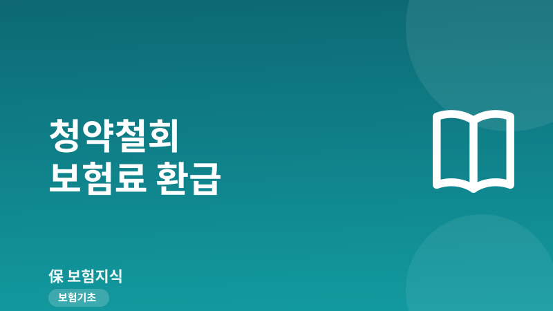
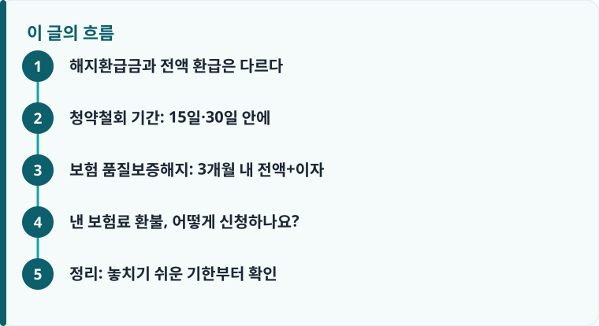

가입 초기에는 단순 해지가 아니라 청약철회나 품질보증해지로 낸 보험료 전액을 돌려받을 수 있습니다.
청약철회는 청약일부터 15일, 증권 받은 날부터 30일 이내. 품질보증해지는 불완전판매가 있으면 3개월 이내가 기한입니다.
기한을 하루라도 넘기면 권리가 사라지고, 그 뒤로는 원금보다 적은 해지환급금만 받게 됩니다.
해지환급금과 전액 환급은 다르다
보험을 잘못 들었다는 생각이 들면 대부분 곧바로 ‘해지’를 떠올립니다. 그런데 그냥 해지하면 그동안 낸 보험료가 아니라 사업비와 위험보험료를 뺀 해지환급금만 돌아옵니다. 저축성이 아닌 보장성 상품은 초기 몇 년간 환급금이 낸 돈의 절반도 안 되거나 0원인 경우가 흔합니다. 단순변심으로 인한 해지는 이렇게 원금 손실을 감수해야 합니다.
반면 법이 정한 두 가지 권리, 청약철회와 품질보증해지는 낸 보험료를 원금 그대로, 경우에 따라 이자까지 붙여 돌려받는 제도입니다. 손해 보고 깨는 해지와는 성격 자체가 다릅니다. 문제는 이 권리에 짧은 기한이 걸려 있고, 이를 모르고 지나쳐 손해를 보는 사람이 많다는 점입니다. 보험의 기본 구조가 낯설다면 보험이 어떻게 굴러가는지부터 짚은 기초 설명을 먼저 보면 이해가 빠릅니다.
청약철회 기간: 15일·30일 안에
청약철회는 이유를 따지지 않고 계약을 없던 일로 되돌리는 권리입니다. 단순히 마음이 바뀌었어도, 설계사와 얼굴 붉힐 필요 없이 낸 보험료 전액을 돌려받습니다. 핵심은 기한입니다. 청약을 한 날부터 15일 이내가 원칙이고, 보험증권을 받은 날을 기준으로는 30일까지 인정됩니다. 증권을 늦게 받았다면 이 30일 규정 덕분에 시간이 조금 더 생기는 셈입니다.
다만 모든 계약이 되는 것은 아닙니다. 건강진단을 받고 가입한 진단계약, 보험기간이 1년 미만인 단기계약, 법인 등 전문보험계약자가 든 계약은 청약철회 대상에서 제외됩니다. 철회가 접수되면 보험사는 3영업일 안에 보험료를 돌려줘야 하고, 늦어지면 지연이자가 붙습니다. 예를 들어 월 20만 원짜리 종신보험을 든 지 열흘 만에 마음이 바뀌었다면, 해지환급금 0원이 아니라 낸 20만 원을 그대로 돌려받는 것이 청약철회입니다. 기한 안이라면 이유를 설명할 의무도, 위약금도 없다는 점이 단순변심 해지와의 결정적 차이입니다.

보험 품질보증해지: 3개월 내 전액+이자
청약철회 기간을 놓쳤어도 포기하기엔 이릅니다. 가입 과정에 문제가 있었다면 ‘품질보증해지(위법계약해지)’로 되돌릴 수 있습니다. 이는 불완전판매를 바로잡기 위한 소비자 보호 장치로, 다음 세 가지 중 하나라도 해당하면 성립합니다. 첫째 약관과 청약서 부본을 받지 못한 경우, 둘째 청약서에 본인의 자필서명(또는 전자서명)이 빠진 경우, 셋째 보험료·보장내용 등 중요사항에 대한 설명의무를 제대로 이행받지 못한 경우입니다.
기한은 계약이 성립한 날부터 3개월 이내입니다. 요건이 인정되면 계약은 처음부터 없던 것으로 취소되어, 낸 보험료 전액에 이자까지 더해 돌려받습니다. 청약철회처럼 15일이 아니라 3개월이라는 넉넉한 시간이 주어지므로, 가입 후 ‘설계사가 설명을 안 해줬다’ ‘서명한 기억이 없다’ 싶으면 곧바로 확인해야 합니다. 설명을 듣지 못한 정황은 약관에서 무엇을 고지받아야 하는지 정리한 안내와 대조하면 판단이 쉬워집니다. 판매 과정 분쟁의 실제 유형은 보험금이 거절된 실제 사례들을 모은 글도 참고가 됩니다.
작성·검수 기준
이 글은 특정 보험사 상품이나 해지를 권유하기 위한 것이 아니라, 소비자가 법으로 보장된 청약철회권과 위법계약해지권을 놓치지 않도록 일반 기준을 설명하기 위해 작성했습니다. 철회·해지 가능 여부와 환급액은 계약 종류, 가입 시점, 불완전판매 인정 여부, 보험회사 심사에 따라 달라질 수 있습니다.
본인 계약에 어떤 권리가 적용되는지는 증권의 약관과 청약서, 그리고 보험 소비자가 자주 놓치는 유의사항을 함께 확인하는 것이 가장 정확합니다.
낸 보험료 환불, 어떻게 신청하나요?
신청 창구는 콜센터·서면(우편)·모바일 앱·홈페이지로 다양하고, 원칙적으로 하나만 이용해도 됩니다. 다만 나중에 다툼이 생기지 않도록 접수 사실과 날짜가 남는 방식이 안전합니다. 특히 품질보증해지는 요건을 증명해야 하므로 증빙을 미리 챙겨두면 처리가 빨라집니다.
- 가입일과 증권 수령일을 확인해 청약철회(15일·30일)와 품질보증해지(3개월) 중 어느 기한 안인지 판단합니다.
- 콜센터·앱·홈페이지 또는 서면으로 철회/해지 의사를 접수하고, 접수번호와 날짜를 기록으로 남깁니다.
- 품질보증해지라면 약관·청약서 미전달, 자필서명 누락, 설명 부실 등 어떤 사유인지 특정합니다.
- 통화 녹취, 청약서 사본, 문자·메신저 대화 등 불완전판매를 뒷받침할 증빙을 모아둡니다.
- 환급이 지연되거나 거절되면 보험 분쟁을 단계별로 대응하는 방법에 따라 금융감독원 민원·분쟁조정을 활용합니다.
정리: 놓치기 쉬운 기한부터 확인
잘못 든 보험이라도 가입 초기라면 원금을 지킬 길이 열려 있습니다. 청약철회는 15일·30일, 품질보증해지는 3개월. 이 두 숫자가 전액 환급과 손해 나는 해지를 가르는 기준입니다. 판매 과정에 문제가 있었다면 고지 단계의 잘못까지 함께 짚어봐야 하는데, 이때는 고지의무 위반이 계약에 미치는 영향도 함께 확인하는 것이 좋습니다.
다른 보험 정보 글이 궁금하다면 보험지식 블로그에서 이어 읽어 보세요. 가입 전에는 반드시 약관과 상품설명서를 확인하는 것이 가장 안전한 방법입니다.